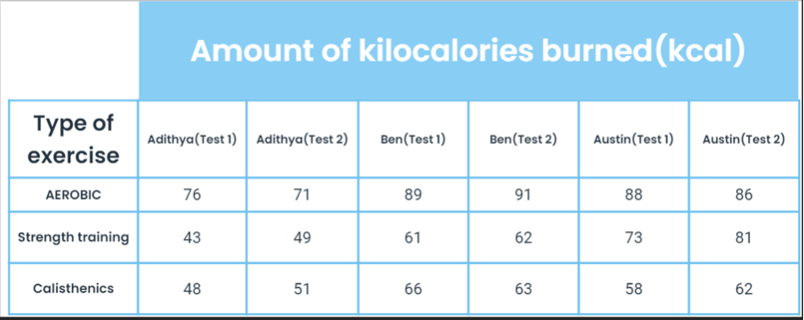
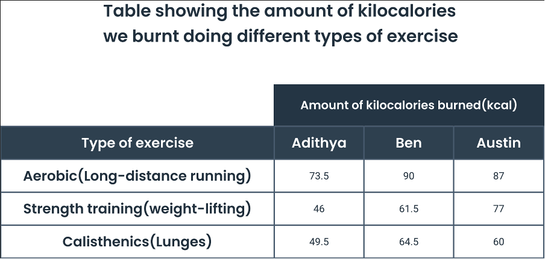

Introduction
Let’s look at some basics. A calorie represents the amount of energy required to raise the temperature of one gram of water by one degree Celsius. One kilocalorie is 1000 calories. In the context of human physiology, calories serve as the unit of energy that our bodies utilize for various processes and physical activities. This energy is obtained through the consumption of food and drink, which are metabolized by the body to release energy for cellular functions, growth, and movement. Burning calories is essential for maintaining energy balance and achieving optimal health outcomes. When caloric intake exceeds how much you spend, the excess energy is stored as fat, leading to weight gain over time. On the other hand, when energy expenditure exceeds intake, stored fat is utilized for fuel, resulting in weight loss. Therefore, the regulation of caloric balance is critical for managing body weight and preventing obesity-related health complications. Aerobic exercises are sustained, rhythmic movements that elevate heart rate and oxygen consumption, highly effective for burning calories. Examples include running, cycling, and swimming, which engage large muscle groups and stimulate the cardiovascular system to increase energy expenditure. Calisthenics, such as bodyweight exercises like push-ups, squats, and lunges, also contribute to calorie burning by promoting muscle strength and endurance. Additionally, strength training activities, involving resistance exercises like weightlifting or resistance band workouts, enhance muscle mass and metabolic rate, leading to greater calorie expenditure both during and after exercise sessions. Incorporating a balanced regimen of aerobic, calisthenics, and strength training exercises is crucial for optimizing calorie burning, promoting weight management, and supporting overall health and fitness.
Aim
Our aim is 'To find out which type of exercise burns the most calories.'
Prediction
We predict that weightlifting will burn more calories than running and lunges. This is based on the understanding that weightlifting requires significant effort from muscles, leading to a higher calorie outflow during the workout. While running and lunges are effective forms of exercise, they target cardiovascular fitness while, weight lifting's capacity to engage multiple muscle groups intensively suggests it will result in a greater overall calorie burn.
Fair Test
Independent variable: Type of exercise
Dependent variable: Amount of kilocalories burned
Control variables: Same watch to measure kilocalories burned, same amount of time spent doing the exercise (10 minutes), same place where the exercise was conducted, same participants.
Method
- Find 3 or more people with roughly the same weight, height, age, and gender.
- Measure their resting heart rate.
- Make one of them wear the Fitbit or smartwatch and start a timer.
- Get the person to run for 10 minutes, after it has been 10 minutes, stop the timer and record the number of kilocalories or calories they burned.
- Let the person get to his resting heart rate, while you wait, make the other two people run for 10 minutes each as well, and record how many kilocalories they burn.
- Once at least one of them is back to their resting heart rate, make them bicep curl the 5 kg dumbbell, with the Fitbit or smartwatch on for 10 minutes, record the number of kilocalories burned.
- Let the person reach his resting heart rate, while you wait for that, make the other two people lift the weight for 10 minutes each as well, and record how many kilocalories they burn.
- When one of them is back to their resting heart rate, make them do lunges for 10 minutes with a Fitbit or smartwatch on, record the number of kilocalories they burn.
- Once they are done, make the other two people do lunges for 10 minutes each as well, and record how many kilocalories they burn.
- Repeat all the exercises again at least once, then take the average and put it into a table.
Results
Table showing the amount of kcal burned by 3 people doing different forms of exercise, without average
Table showing the amount of kcal burned by 3 people doing different forms of exercise, with average
Graph showing the amount of calories burned by different people

Conclusion
In our experiment comparing calorie burns across different exercises, running unexpectedly outperformed weightlifting in terms of calorie expenditure during a 10-minute session. Despite our initial assumption that weightlifting's muscle-focused activity would yield higher calorie burns, the data told a different story. Running engaged both the legs and arms more dynamically, leading to a higher calorie burn in the short timeframe. This aligns with existing research highlighting running's effectiveness as a calorie-burning exercise. For example, studies consistently show that running at a moderate pace significantly elevates oxygen consumption compared to weightlifting, indicating a higher calorie burn. Thus, our experiment's results, combined with scientific evidence, emphasize the effectiveness of running for burning calories efficiently, even within short timeframes.
We also found that because Austin and Ben had a higher body weight, they burnt way more calories than Adithya. This is because they have a bigger body to tend to essentially as their bigger body needs more oxygen to function which means they have a higher metabolism.
Evaluation
In evaluating our experiment, we found no glaring anomalies in the data collected. However, upon closer examination, Austin's results stood out—he burned the second most calories while weightlifting, while Adithya and Ben burned the least during this activity. This inconsistency prompts consideration of several factors that may have influenced these outcomes. Firstly, Austin's higher body weight could have contributed to his higher calorie expenditure, as individuals with greater mass often have higher metabolic rates. Additionally, variations in fitness levels among participants could have played a role, with Austin potentially possessing a different level of fitness compared to Adithya and Ben. Nevertheless, it's important to acknowledge potential limitations in our experiment. One notable consideration is the use of Fitbit or smartwatch devices to measure calorie expenditure, which may not provide entirely accurate readings. These devices rely on algorithms and sensor data to estimate calorie burn, and while they offer convenient tracking, they may not capture individual physiological differences or account for the intensity and form of exercises accurately. To address these potential limitations and improve the fairness of future experiments, several adjustments could be implemented. Increasing the sample size of our experiment could provide us with better results. However, we think our results are already pretty reliable as we repeated it twice among three people.